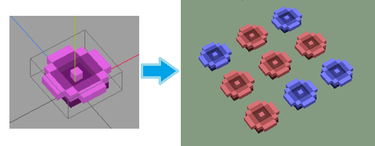
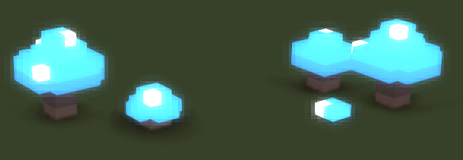

Color maps are something that we can use for adding color variety to our items. They are used together with material maps. The existing color maps and material maps can be found inside stonehearth/data/materials.
These maps can be used to apply color palettes or rendering materials to a QB model or to parts of it, either via JSON or dinamically in a Lua script.
Some context: Objects look for a default "stonehearth:render_materials" material in their entity_data when being created (see the
item_properties.jsonmixin for an example). We can change this default material with a mixinto so that the item has a custom default material, or we can use a material map to apply different materials and shaders to it.
Randomizing colors
One of the uses of the color maps is to allow for the same .qb model to have random colors every time we spawn it in the game (this can also be achieved by using different .qb models instead).
Let's start by creating a color_map and adding an alias for it into our manifest:
"aliases" : { "color_map:flower" : "file(data/materials/color_maps/flower_color_map.json)" }The
flower_color_map.jsonfile looks like this:{ "#FC6EFE" : "silent_woods:flower:hilight", "#A438A5" : "silent_woods:flower:midtone", "#761B76" : "silent_woods:flower:shadows" }The JSON keys refer to the colors from our QB model in hexadecimal format. You can add as many keys as you need, but if you later modify the model, make sure to update the color entries here too, otherwise the color map won't take effect.
The values for the keys inside the color_map can be named anything. We usually write them like URIs, prefixed by the name of our mod, but they are just identifiers that we will be using in the material maps. If you don't want to apply a random color to a certain part of your model, simply don't add the color of that part to your color map.
It doesn't matter which colors the QB model has, because we'll be remapping them with this. For example, the models for the different hairstyles of the hearthlings are purple and pink, but you won't see those colors inside the game, because a color palette is applied to them.
Now let's create a material map that maps these color zones to other colors. Let's call this file
flower_red_material_map.json, for example:{ "silent_woods:flower:hilight" : { "color" : "#DB6D5C" }, "silent_woods:flower:midtone" : { "color" : "#A94839" }, "silent_woods:flower:shadows" : { "color" : "#5F241B" } }Here we change the color tagged with
"silent_woods:flower:hilight"("#FC6EFE") to "#DB6D5C". Same for the other colors. Let's create a copy of this file, name itflower_blue_material_map.json, and assign different colors to each entry.Lastly, let's assign the color and material maps to our entity. To do that, in our entity ghost JSON file, we add them to the render_info component (it could also be in the JSON file for the iconic, or wherever you declare the QB model that you want to alter):
... "components": { "render_info": { "color_map": "silent_woods:color_map:flower", "material_maps": [ { "type": "one_of", "items" : [ "/silent_woods/data/materials/material_maps/flower_red_material_map.json", "/silent_woods/data/materials/material_maps/flower_blue_material_map.json" ] } ] }, ... }, ...With "type" : "one_of", only one of the material maps will be chosen. This way, whenever we spawn our flower in the game, it will either be red or blue, and not the original colors of the QB model.
Once the flower is spawned, it will keep the chosen color even if we move it or undeploy it. For ghosts though, they will have a different random color each time (since a new ghost is generated every time we move or place the item). You can, however, apply one material map to the ghost and a different material map to the entity, that way you can control which colors will be applied on every situation.
The "one_of" type can also be used for randomizing QB models.
 When testing, if you notice that no matter how many times you spawn the item, it always has the same color, try adding this inside the "render_info" component where you declared the color / material maps:
When testing, if you notice that no matter how many times you spawn the item, it always has the same color, try adding this inside the "render_info" component where you declared the color / material maps:
"cache_model_geometry": false
Model geometry is cached by default for performance reasons, but there are some places in Lua files where we disable it, so for some entities the random color will work even if they don't have "cache_model_geometry" set to false in their JSON files. 
Applying render_materials
We can also apply a different render material using material maps. It will make the color be rendered differently, for example to make it shiny, semi-transparent, or emissive. You can use existing materials from the stonehearth mod before trying to make your own ones.
First, let's make a color map like we did before. But this time let's reuse an entry from an existing material map. This is
silent_woods/data/materials/color_maps/nightdew_color_map.json:{ "#204C7A": "stonehearth:glowing", "#20598D": "stonehearth:glowing", "#24619A": "stonehearth:glowing", "#8895AE": "stonehearth:glowing" }The "stonehearth:glowing" makes reference to an entry in
stonehearth/data/materials/material_maps/mob_material_map.jsonand instonehearth/data/materials/material_maps/natural_material_map.json.Now we add our color map and a matching material map to our entity. So, inside
nightdew_ghost.jsonwe have the render_info like this:"render_info": { "scale": 0.15, "color_map": "stonehearth:color_map:natural", "material_maps": [ "/stonehearth/data/materials/material_maps/natural_material_map.json" ] },Notice that the "material_maps" array contains just entries, and not an object like in the previous example of randomizing colors. We can add several material maps this way, if we want all of them to be applied (for example, if our color map's entries are in different material maps).
Let's take a look at
natural_material_map.json:{ "stonehearth:glowing" : { "render_material" : "materials/glowy_voxel.material.json" }, "stonehearth:shiny" : { "render_material" : "materials/shiny.material.json" }, "stonehearth:voxel" : { "render_material" : "materials/voxel.material.json" }, "stonehearth:transparent_glow" : { "render_material" : "materials/transparent_with_depth_bloom.material.json" } }Here we have the "stonehearth:glowing" entry at the top. Instead of pointing to a color, it points to a render material. There are other entries here, so if we had used them for some entry in our color map, they would have been applied for those colors too.
The path defined in "render_material" points to a file inside
stonehearth/data/horde. Even if we used our own material map file inside our mod, the game will read the material file from the stonehearth mod if we declare it like this:"render_material" : "materials/glowy_voxel.material.json"If we want the game to read a material file from inside our mod, we'd have to write the full path like this:
"render_material" : "/silent_woods/data/horde/materials/glowy_voxel.material.json"Let's test that the render material is applied to our entity (if there's some problem with it, a message will appear in the stonehearth.log informing that the game couldn't load the material):

You can read more about render materials and shaders here.